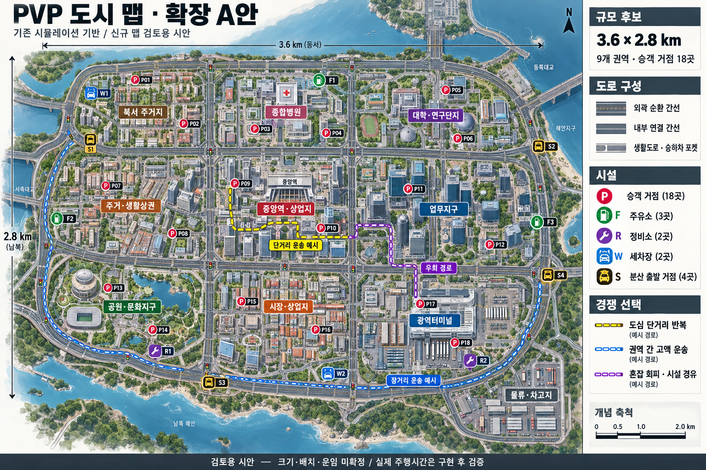
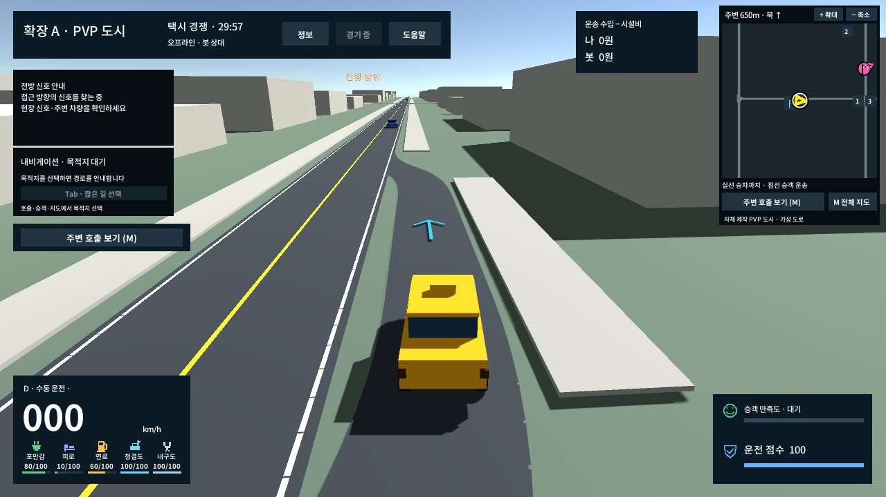
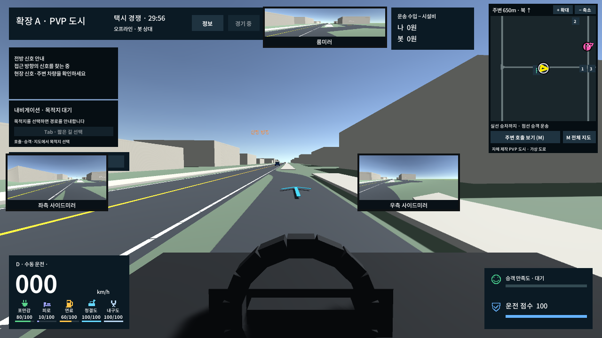
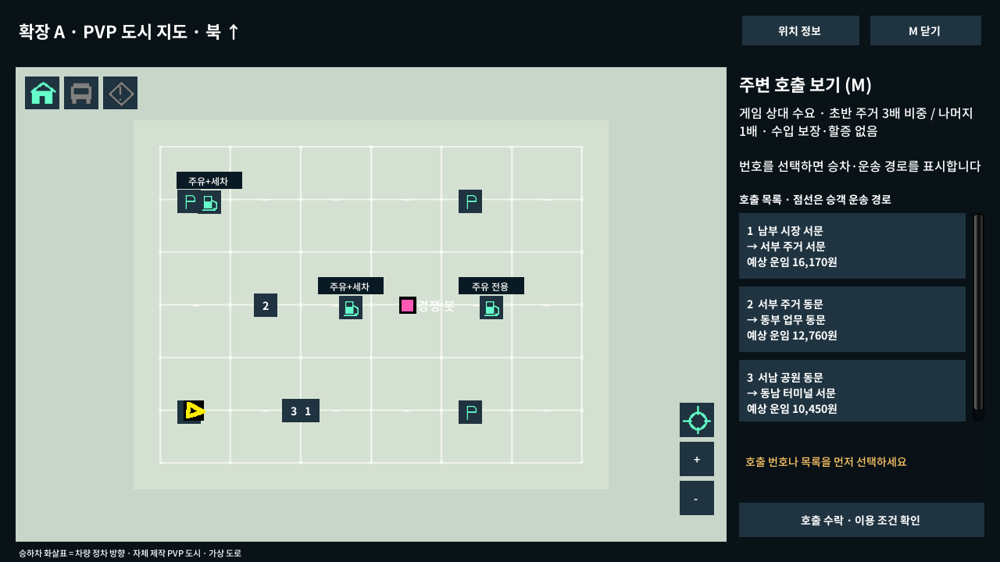

기존 시뮬레이션 전환 기록. 경기 요소는 계승하지만 아래 최초2차로 배치·옛 실행 안내는 당시 상태다. 현재 지도/실행/권한은 PVP 기준·27·30을 따른다.
사용자 승인: 2026-10-30. 기존 시뮬레이션의 실제 화면/차량/승객/내구도 구현을 사용한다. 이전 독립 평면 모터 프로토타입을 제품 기준으로 확장하지 않는다.

시안은 배치 방향이며 실제 게임의 그래픽 품질/건물 모양/해안 지형을 보장하는 스크린샷이 아니다. 첫 구현은 기존 WorldBuilder로 그리는 가상 도심이다.
| 항목 | 실제 구현 방향 |
|---|---|
| 크기 | 3,600 × 2,800m |
| 권역 | 서남 공원/남부 시장/동남 터미널/서부 주거/중앙역 상업/동부 업무/서북 주거/북부 병원/동북 대학 |
| 도로 | 외곽 연결과 내부 7×7 격자, 현 단계 왕복2차로, 방향별 연결/회전 차로 |
| 승객 | 18개 거점, 본선과 분리된 진입/정차/합류 포켓 |
| 시설 | 주유3, 정비2, 세차2, 출발/휴식 주차장4 |
| 기존 체계 | MapData/HdRoadGraph/WorldBuilder/TrafficSystem/DrivingLaw 사용 |
| 미포함 | 시안 배경 해안/교량의 재현, 다차로 간선 확장, 미술 완성도·장기 밸런스 확정 |
| 요소 | 적용 |
|---|---|
| 화면 | 기존 DriveHUD/CockpitUI/운전석/거울/지도 유지, 기존 상단 셀에 경기 시간과 상대 순수익 표시 |
| 조작 | TaxiController Rigidbody/WheelCollider, 기존 WASD/제동/조향 보조/깜빡이/승하차 키 유지 |
| 승객 | PassengerJobs/기존 유형·행동·만족도·운임, 동일 승차 거점 선점 중복 방지 |
| 내구도 | VehicleDamageController/원래 충돌 손상·유료 견인·수리 |
| 상대 | 같은 물리 택시로 운송하는 오프라인 봇. 원격 실제 유저 네트워크 전환은 후속 검증 |
| 결과 | 완료된 실제 운임에서 실제 시설 지출을 뺀 순수익 비교, 운전 평가는 기존 운임 계산에 반영. 종료 후 추가 정산 금지 |
| 시설 시간 | 원래 비용/상태 변화, 이용한 차량만 해당 시간 조작 잠금. 상대 경기 시간은 건너뛰지 않음 |
| 저장 | 경기 상태는 메모리 전용. 캠페인 저장/운전 기록/지도 편집/설정 덮어쓰기 차단 |
| 시간 | 시작 시30~7200초 입력. 제품 경기 시간을10분으로 확정하지 않음 |
현재 실행은 builds/EungyeTaxi/EungyeTaxi.exe → PVP → A2 경기다. 별도 PvpPrototype.exe/은계 경기 선택은 초기 전환 단계의 진단 경로이며 현재 배포하지 않는다. 오프라인 메뉴와 LAN의 일시정지 차이는 현재 PVP 기준·LAN을 따른다.
실제 결과 및 제한은 작업 이력에 기록한다. 기존 모델 검사/Editor 연결 검사/실제 입력 주행/상태 fixture/실제 화면/사람 조작을 구분한다.
pwsh -File tools/test_pvp_simulation.ps1 -PaidFixture: 은계 원래 호출9→15/8→2를 지정하고 실제 주행·해당 운송 양수 운임·정산·충돌·다른 맵 재시작 확인.pwsh -File tools/test_pvp_simulation.ps1 -Regression: 혼잡 경로9→7/21→7의 실제 목적지 도착·원래 정산 확인. 시간 초과0원은 따로 표시하며 양수 운임 검사로 대체하지 않음.pwsh -File tools/test_pvp_simulation.ps1 -Expanded: 확장 A의 기본 호출 실제 양수 운임 검사.pwsh -File tools/test_pvp_simulation.ps1 -Services: 연료24 시작 fixture 뒤 실제 주유소 이동·자비 주유·차량별 대기·출차 검사.자동 운송은 원래 기본 위치에서 페달·조향 입력으로 수행한다. 일반 승객 선택/고정 호출/후속 충돌 벽/피로·시설 시간 검사 준비를 명시적으로 구분한다. 사람이 조작해 완주한 검사와 같지 않다.
아래는 기존 시뮬레이션 화면을 사용하는 확장 A 첫 구현의 실제 Player 캡처다(1280×720, 소스1c9b3e7; 이후 b5b5304는 충돌 검사 관측기만 수정). 위 배치 시안과 실제 초기 미술 수준을 구분한다.



이 페이지는 docs/content-design/pvp/25-simulation-match.md에서 python tools/render_design_docs.py로 만든다. 내용은 md를 고친다.